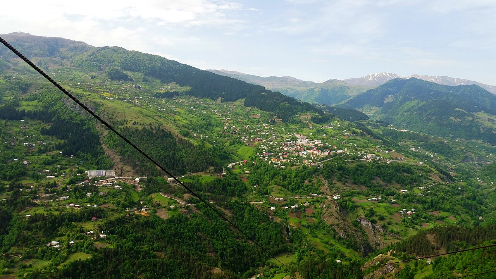
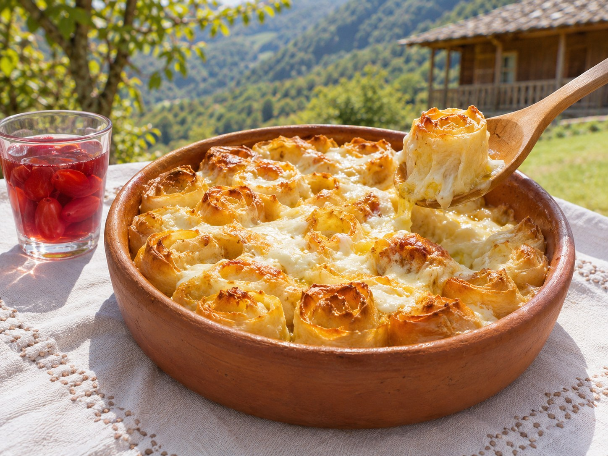

Юха

Нет, нож не так. Дайте сюда. Видите, свиток надо держать слегка, как птенца, иначе он сплющится и полоски слипнутся. Режете на два пальца. Не на мои два пальца, на свои. У меня пальцы толстые, семьдесят лет тесто месили, а у вас писательские, у вас как раз выйдет как у моей свекрови. Вот. Хорошо. Ещё сто таких, и можно идти на свадьбу.
Свадьба в субботу, внучка выходит замуж. Гостей сто человек, это если считать по-честному, а по-честному у нас никто не считает. Всё остальное привезут из Хуло и из Батуми, а синори делаю я. Синори на свадьбе не покупают. В Батуми в кафе его теперь делают из лаваша для туристов, я пробовала один раз и потом целую неделю была добрая, как после похорон. А настоящее синори — это юха. Юха — такое тесто без дрожжей, раскатанное тоньше газеты. Его пекут листами, потом тёплым заворачивают в полотенце, чтобы стало мягким, сворачивают свитком и режут. Потом полоски ставят стоймя в форму, заливают творогом с маслом и чесноком и ставят в печь. На свадьбе в горах синори ставят на самое почётное место. Так было при моей бабушке, и так будет в субботу, хотя в этот раз договариваться пришлось дольше, чем про калым.
Вы к нам на канатке приехали, из Хуло? Я так и подумала, у вас по лицу видно, что вы ещё немножко висите над ущельем. Ничего, через час пройдёт. Мы на ней по три раза на день ездим, и то бабушки крестятся, а дедушки читают про себя по-арабски. Каждый просит своего, а вагончик один. Я вам сейчас расскажу про нашу семью, и вы поймёте, почему я смеюсь.
Мой свёкор, Мемед, был у нас в селе муллой. Не таким, чтобы в чалме и с бородой до пояса. Днём он был счетоводом в колхозе, в нарукавниках, считал табак и картошку. А вечером задёргивал занавески, и к нему приходили старики, и если кто-то умирал, то молитву над ним читал счетовод. Он говорил, что Бог видит сквозь занавески, а парторг нет, и пусть так и останется. Так все тогда жили, двойной жизнью. И наши, и христиане внизу, в Батуми: те тайком красили яйца, а мы тайком резали барана на Курбан-байрам. Баран по документам пал с обрыва. Обрывов у нас много, колхоз верил.
Мой муж, Джемал, тот пошёл дальше отца. У него в шкафу лежал партийный билет, а под кроватью коврик для молитвы, и он никогда не путал, что откуда доставать. Я ему говорила: Джемал, если тебя когда-нибудь перевернут, из тебя выпадет и то и другое, и неизвестно, что хуже. Он смеялся. Он и сейчас смеётся, сидит во дворе и считает стулья для свадьбы. Счёт у них в роду.
А сын наш Тамаз в девяностые крестился. Тогда многие крестились, целыми сёлами внизу, а у нас, в горах, по одному, как падают абрикосы. Сидишь и думаешь, чей следующий. Тамаз учился в Батуми, вернулся на каникулы и за ужином сказал. Прямо за ужином, с ложкой в руке, как говорят, что завтра дождь. Джемал положил ложку, встал и ушёл во двор. И целый год с сыном не разговаривал. Не ругался, не выгонял, просто говорил через меня. «Скажи своему сыну, чтобы передал соль». «Скажи своему отцу, что соль перед ним». Год я была переводчицей с грузинского на грузинский. Из всех работ, что у меня были, эта была самая дурацкая.
А помирились они через синори. Тамаз снова приехал летом, а я нарочно поставила одну форму на всех, и одну ложку, большую. Синори такое блюдо, его берут с края, и всегда кто-то тянет себе самую румяную полоску. Они потянули оба одну и ту же. Потянули, посмотрели друг на друга. Джемал сказал: «Бери, тебе надо есть, ты как свечка». Это были первые слова за год. Тамаз сказал: «Сам бери, пост у меня». И оба засмеялись. А я стояла у плиты и думала: год мучений, а надо было просто сделать синори пожирнее.
Синори, вы знаете, что значит? По-нашему, по-аджарски, и по-лазски тоже, это «граница». Я в детстве думала, что это потому, что в нас после него уже ничего не лезет. А теперь думаю, что насчёт нас всё правильно назвали: живём на границе и ничего, сытые.
Не спешите, дайте я новый лист достану. Видите, какой тонкий? На свет посмотрите, там видно окно. Такой лист моя бабушка называла «невестиным». И вот теперь про бабушку, а то вы подумаете, что у нас всё было смешно.
Бабушке было лет восемь, когда в двадцать девятом году в село приехали начальники из района. Собрали женщин на площади и велели снять чадры. И школу при мечети закрыли, где мальчиков учили. Бабушкина мать сняла чадру, потому что рядом стояли люди с револьверами, а дома до утра сидела лицом к стене. Потом мужчины по всему верху взялись за ружья, потом пришли солдаты. Про это бабушка не рассказывала, только что их с сестрой спрятали в сарае под сеном и что сено кололось. А через несколько месяцев из Москвы пришло указание, что местные перегнули, и чадры разрешили обратно. Бабушка про всё это говорила одну фразу: «Сняли, надели, а голова одна». Я её в детстве не понимала. Теперь, когда у меня в семье и партбилет, и коврик, и ряса, понимаю. Что на неё ни надевай, а голова всё равно одна.
Да, ряса. Тамаз стал священником. У нас много священников из мусульманских семей, это никого здесь не удивляет, удивляются только те, кто приезжает из Тбилиси. Вы, наверное, тоже думали, что все грузины крестятся? Нет, не все. Нас там внизу иногда называют татарами. Я одного такого в Батуми спросила, на каком языке он меня ругает. Он сказал, что на грузинском. Я сказала: вот и я на грузинском тебе отвечу, и ответила. Он многого из того, что я сказала, не знал, но понял.
По-русски я говорю с вами потому, что вы по-нашему, по-горски, половину не поймёте. А русский я учила в школе и на курсах в Батуми, на бухгалтера. Так что не удивляйтесь, если я говорю, как счёт-фактура.
Теперь про свадьбу. Внучка моя, Нино, дочь Тамаза. Дочь священника, крещёная в месяц, крестик на шее. А жених, Сандро, из соседнего села, вон того, на той стороне, где деревянная мечеть с жестяной крышей. Жесть снаружи от снега, а внутри резьба и краска, такой красоты ни в одной церкви внизу нет, я это и Тамазу говорила. Он не спорит. Сандро — внук имама этой мечети. Имам умер, теперь там другой, а отец Сандро, Джумбер, водит грузовик и по пятницам стоит в первом ряду.
Они познакомились в Батуми, в университете. И два года никому не говорили. А я знала. Я узнала по юхе. Нино с детства не хотела учиться раскатывать, говорила, что в Батуми лаваш продают. А позапрошлым летом вдруг пришла и говорит: бебо, научи. И целое лето раскатывала, до мозолей. Девочка учится делать юху только в двух случаях: когда бабушка заставила или когда замуж собралась в горы. Я её не заставляла. Значит, второе. Я молчала и смотрела, кто из горных мальчиков вдруг стал часто ездить на нашей канатке. Вычислила за неделю. У меня бухгалтерское образование.
Когда они наконец сказали, Тамаз сначала молчал, потом пошёл в церковь, потом пришёл ко мне. Джумбер сначала молчал, потом пошёл в мечеть, потом пришёл к своей матери. Мы с его матерью годами одного торговца на рынке в Хуло ругаем, за недовес. Вот мы и встретились у этого торговца, как будто случайно, и всё решили за полчаса, пока он вешал нам фасоль. Свадьба у нас, потому что у нас двор больше. Дети сами решат, где им молиться, им по двадцать пять лет. Торговец тогда первый раз в жизни довесил, с перепугу.
А потом начались переговоры. Джумбер и Тамаз сидели у меня на кухне три вечера, как два министра. Первый вечер про вино. У нас в горах вино не пьют, ну, почти не пьют, а свинину не едят совсем. Тамаз сказал, что ему вино на свадьбе дочери не нужно, он и так счастлив. Джумбер сказал, что не хочет, чтобы гости с той стороны думали, что они не умеют принимать. И вот они час уступали друг другу, каждый то, чего сам не хотел. Когда дошло до того, что священник уговаривает не пить, а сын имама уговаривает пить, я взяла кастрюлю и сказала: компот. Из кизила. Оба обрадовались, что не им решать.
Второй вечер про то, кто скажет слова над молодыми. Решили, что оба, но коротко. Тамаз спросил, сколько это «коротко». Джумбер сказал: как подняться на канатке от Хуло до нас. Несколько минут. На третий вечер они уже просто пили чай и ругали футбол, оба за батумское «Динамо», и про свадьбу забыли. А Джемал сидел в углу, посмеивался и считал, сколько чашек кто выпил.
А про синори никто не спорил. Про синори решаю я. Оно стоит посередине, на почётном месте, куда его всегда ставили, и при мулле, и при батюшке, и при парторге. Парторг у нас на свадьбах тоже ел синори, ещё как. Всё остальное вокруг него, и даже торт из Батуми, который заказала жена Тамаза, пусть постоит сбоку и подумает о себе. Две формы будут обычные, а третья сладкая, с сахаром и орехами, для детей и для Джемала, он сладкое любит, как ребёнок. Синори ведь ни мусульманское, ни христианское. Оно аджарское, и масла в нём столько, что спорить про Бога после него уже никто не может, все хотят только полежать.
У нас на свадьбе вина не будет, писатель, вы уж простите. Будет компот и спор. Спор тоже пьянит, если долго. Приходите в субботу, вас посадят между Тамазом и Джумбером, они давно хотят спросить у кого-нибудь со стороны, чей Бог лучше держит вагончик канатки. Отвечайте, что трос. Трос у нас меняли в прошлом году, это я точно знаю.
Вот вам последний свиток, режьте сами, до конца. У вас рука ровная, вам всё равно, кто за кого молится, вот и полоски выходят одинаковые. А теперь масло. Масло довести до кипения, творог туда, чеснок давить, не резать, воды чуть-чуть, и мешать, чтобы не пристало. Полоски стоймя, плотно, как гости на канатке в пятницу. Залить, чтобы покрыло, и в печь, пока верх не зарумянится. А наверх потом ещё масла. Не смотрите на меня так. Я же сказала: чтобы никто не спорил.

Синори
На 4 порции.
Юха
мука пшеничная — 250 г
тёплая вода — около 130 мл
соль — щепотка
Заливка
творог или нагуби (сливочная творожная пенка) — 500 г
сливочное масло — 50 г и ещё столько же топлёного для поливки
чеснок — 30 г
вода — 50 мл
соль — по вкусу
1. Замесите крутое пресное тесто из муки, воды и соли, дайте ему полежать под плёнкой 30 минут. Разделите на 2 части и раскатайте каждую как можно тоньше, до прозрачности.
2. Запеките листы в горячей духовке или на сухой сковороде, пока не схватятся, но не порумянятся. Тёплыми заверните в полотенце, чтобы размякли. Вместо юхи можно взять два листа тонкого лаваша.
3. Сверните листы свитками и нарежьте полосками шириной в два пальца, около 3 см.
4. В сотейнике доведите до кипения 50 г масла, положите творог, раздавленный чеснок и соль. Добавьте воду и, помешивая, чтобы не пристало, дайте творогу растопиться. Снимите с огня, как только масса соединится.
5. Поставьте полоски юхи стоймя, плотно, в глубокую форму и залейте творожной массой так, чтобы она покрыла юху.
6. Запекайте в разогретой до 200 °C духовке 10–12 минут, пока верх не зарумянится.
7. Достаньте и сразу полейте горячим топлёным маслом.
Сладкое синори делают так же, только в кипящее масло добавляют сахар, а юху пересыпают толчёными орехами. Иногда творог заменяют мацони, а за столом натирают сверху сыр.
Тбилиси, ноябрь 2026